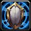
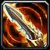
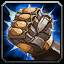
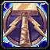
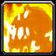
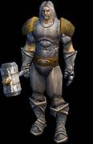

Паладин - это смесь воина и священника. Паладин идеален для групп,
благодаря умению лечить игроков, печатям, помогающим во время боя, и
другим способностям. Паладины могут иметь лишь одну ауру активной, и
давать другим игрокам по одной печати на каждого. Так же, Паладинов очень
тяжело убить благодаря их защитным способностям. Собственно почти вся их
магия - это защитная. Паладины также легко справляются с нежитью,
благодаря нескольким способностям, предназначенным против
мертвецов.
Стандартные индикаторы:
Здоровье/Мана
Используемый тип одежды: кольчуги, кожа, щиты,
тяжелые доспехи
Используемое оружие: одноручные и двуручные
булавы и мечи
Основные способности Паладина - ауры, печати. Вы можете иметь
только одну активную ауру и вам придется выбирать, какую лучше ауру
применить в текущей ситуации. Если в команде несколько Паладинов, то они
одновременно могут использовать разные ауры, но они не могут складывать
эффект одной и той же ауры. Если вы оказались в одной команде с другим
Паладином, спросите его или ее какую ауру он или она собирается
использовать. Вам стоит выбрать какую-нибудь другую, которая будет выгодно
дополнять ее.
Печати - это некий вариант буффа. Паладин может
иметь только одну активную печать на одном игроке. Таким образом, в
команде с двумя Паладинами каждый член группы может иметь по две
Печати.
Ауры | |
|  | Аура приверженности(Devotion Aura) - дает дополнительную защиту ближайшим членам группы. Используйте ее, когда вы вместе с вашими товарищами попали под несколько противников сразу. |
|  | Аура возмездия(Retribution Aura) - наносит повреждение святой магии любому существу, которое атакует вашу группу. |
Печати | |
|  | Печать Силы(Seal of Might) - увеличивает повреждения. Используйте эту Печать на членах группы, которые наносят противнику самые большие повреждения. |
Печать Мудрости(Seal of Wisdom) - увеличивает скорость регенерации маны. Используйте ее на колдующих персонажей, таких как Священники или Маги. Кроме того, вы можете использовать ее на себя, чтобы восстановить ману после битвы... | |
Печать Защиты(Seal of Protection) - защищает цель от всех физических атак. Эта печать великолепно подходит для того, чтобы помочь убежать с поля битвы. Хотя это, конечно же, не стиль настоящего Паладина. | |
Печать Спасения(Seal of Salvation) - понижает уровень угрозы выбранного персонажа. Эта печать полезна Священникам или Магам, так как монстры могут просто проигнорировать их, давая им больше времени на свои заклинания. | |
Святая Магия | |
Святой Свет(Holy Light (Healing))Паладины хороши в качестве второстепенных целителей. Вам понадобятся профессиональные целители, такие как Священники и Друиды, но когда они не доступны, Паладин может взять на себя обязанность целителя. Паладины также хороши для спасения профессиональных целителей, когда они израсходовали всю ману и находятся присмерти. | |
Божественная Благосклонность(Divine Favor) - Вы защищены от всех физических атак и заклятий на несколько секунд, но в это время вы не можете атаковать или использовать на себя физические умения и способности. | |
Божественный щит(Divine Shield) - защищает Паладина от всех физических атак и заклятий на некоторое время, но значительно понижает скорость вашей атаки. Также вы можете лечить себя, пока используете Божественный Щит. | |
Святые удары | |
Святой Удар(Holy Strike) - освящает ваше оружие, наносит дополнительные повреждения в следующую атаку. Весь урон считается сделанным святой магией. | |
Правосудие | |
|  | Кулак Правосудия(Fist of Justice) - оглушает цель на несколько секунд. |
Средства против нежити | |
|  |
|
Отворот нежити(Turn Undead) - заставляет монстра убегать. Это хорошо работает против, например, целой группы мертвецов. Это умение также может помочь вам убежать из толпы зомби. Есть еще одно применение этому умению: можно отгонять мертвецов, пока вы залечиваетесь. | |
Другие способности
Так же у Паладина есть
несколько особенностей, которые могут сильно помочь в сложной
ситуации:
Lay on Hands (очень долгое успокаивание)
использует всю его ману. Исцеляет дружественные цели на число равное
максимальному числу жизней Паладина и восстанавливает их ману. Однако,
использование этого умения высасывает всю оставшуюся ману Паладина... Это
одна из лучших способностей Паладина. Используйте ее, когда вы присмерти
или для спасения члена вашей группы. Не используйте ее понапрасну, а
оставьте до моментов, когда она действительно понадобится.
Если вы попали в тупиковую ситуацию, начните бежать. Наложите Печать Защиты и продолжайте движение. Как только Печать перестанет действовать, используйте Божественный Щит. Благодаря такому порядку действий, вы сможете убежать довольно далеко, даже если вас атакует множество монстров.
- Используйте Кулак Правосудия и лечитесь с помощью Священного Света,
пока монстры оглушены.
Снаряжение
 Сфокусируйтесь на вещах, прибавляющих к
выносливости и защите. Вы можете использовать меч со щитом, или двуручный
меч или молот. Вы, возможно, захотите тренировать все эти способности
сразу, однако вам необходимо выбрать, на каком оружии
специализироваться.
Паладин может стать великолепным рудокопом/инженером или рудокопом/кузнецом. Это все зависит от вашего выбора. Травник/алхимик тоже будет очень полезен из-за специальных буфф-зелий, которые он сможет сварить.
Если вы выбираете между двуручным оружием и щитом вместе с одноручным оружием, то наш совет таков - оба варианта хороши. Двуручное оружие хорошо против монстров с хорошей броней. Одноручное оружие лучше использовать против монстров (с не высокой) плохой броней для того, чтобы срывать их заклятия их, так как одноручное оружие бьет чаще. Вы можете тренировать оба вида оружия и переключаться между ними, когда это необходимо.
Советы
- Используйте Кулак Правосудия, чтобы не
дать магическому монстру использовать заклятья. Перед использованием
Кулака Правосудия убедитесь, что тот, на кого вы хотите его использовать,
уже не оглушен, чтобы не потратить его зря.
- Спрашивайте членов вашей
группы, какие Печати им нужны (если они знают их). И попросите сообщать
вам, когда их Печати прекратят действовать.
- Если монстр напал на
слабого члена группы, например на мага, то оглушите монстра с помощью
Кулака Правосудия.